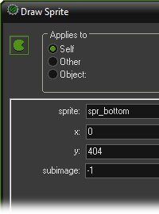
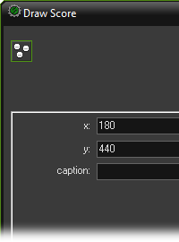
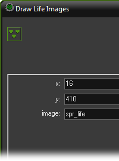
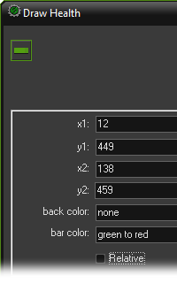
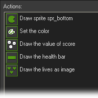
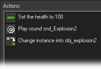

Tutorial
Page 9 of 13
Score, Lives And Health
It is a bit unsatisfactory that the game ends whenever you are hit. To make the game a bit more interesting we will let enemies create damage. Only when the plane gets too much damage
will it be destroyed. Also we will introduce multiple lives and create a nice information panel that shows this information, together with the score. Fortunately, this will all be very easy because
GameMaker has built-in mechanisms to deal with score, lives, and health (being the opposite of damage).
To create all this we make a new object called the controller_life. It does not need a sprite as we will control the drawing itself using the drawing event. As you know, normally in
each step the sprite that is set for the instance is drawn at the correct location in the room. But when you put actions in the drawing event this is no longer the case. Now these actions
determine what is being drawn.
There is a whole collection of actions available just for drawing. Most of them can be found in the Draw tab. But you can also use other actions here. The drawing actions only
make sense in the drawing event. At other places they are basically ignored.
As a start we create one big sprite that functions as information panel. Create a new sprite and load in the "bottom.png" sprite from the "Resources" folder that accompanies this tutorial.
It will show the score, the damage (in the black area at the left), and the number of planes left, that is the number of lives. In the drawing event of controller_life we draw this
information panel sprite at the correct position using the action to draw a sprite. We fill the parameters in as follows:

This will place the correct sprite at the bottom of the screen. (Using –1 for the subimage means that the current subimage is drawn. As there is just one subimage in the sprite we don't really
care about this, but if a sprite consists of multiple subimages you can indicate here the subimage you want to see.) To make sure that the bottom panel lies above everything else we give the
controller_life object a depth of –10000.
In its creation event, the controller_life object sets the score to 0, the number of lives to 3, and the health to 100. There are actions for this in the Score tab. To draw
the score we use the appropriate action in the Score tab. (We first set drawing color to be yellow.) In the action to draw the score, we fill in the parameters as follows (no caption
because the caption is already on the background):

For drawing the lives we use a different mechanism. Rather than just drawing the number we will draw a number of little images of the plane. For this we will use a small sprite depicting the
plane. There is an action for this in the Score tab.

As we do now show the score and number of lives ourselves we no longer want them displayed in the window caption. There is an action in the Score tab to indicate what must be
shown in the window caption. Put this in the creation event of the object and indicate that nothing should be shown. Also for drawing the health there is a special action. The health is displayed
in the form of a health bar. You can indicate the position, size, and color scheme used. We fill in the parameters as follows:

The total drawing event looks something like this:

But we still need to actually check for the health and lives. First of all we have to make some changes in the collision event of the enemy plane and the main plane. It should no longer destroy
the main plane, but only destroy itself (turning it into an explosion) and decrease the health, that is, set the health relative to -30 (so it can withstand 3 hits).
The controller_life object will check when the health becomes smaller than 0. There is an event for this under the other events. In this event we blow up the main plane by turning it
into a big explosion. We also reset the health and play the correct sound. So the event looks like this:

In the big player explosion object, in its Animation End, it should destroy itself, then create a new player plane at the current position (that is, relative at position (0,0)) and reduces the number
of lives, that is, set it relative to –1.
Finally, we need to check whether we did run out of lives. Fortunately, there is again an event for this. For the controller_life object, in this event we display a message and
restart the game. This finished the third version of the game. You can now play it and it already looks pretty good. But the game soon becomes boring. So we have to enhance it a bit more and
add some variation.